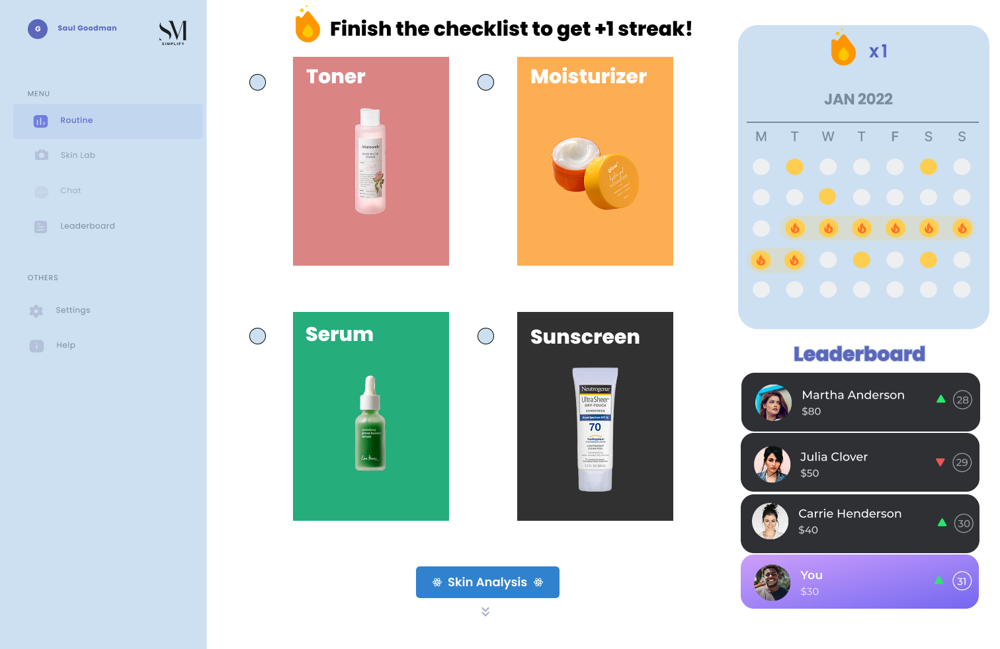
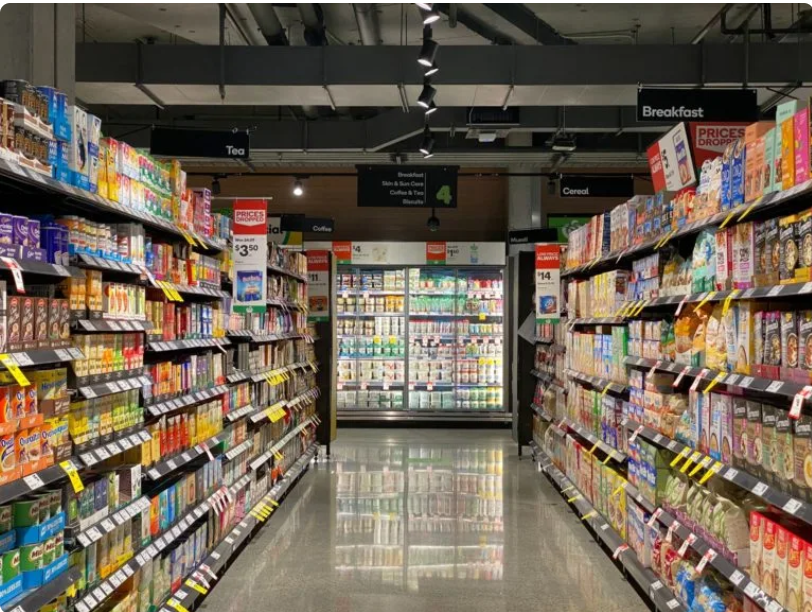
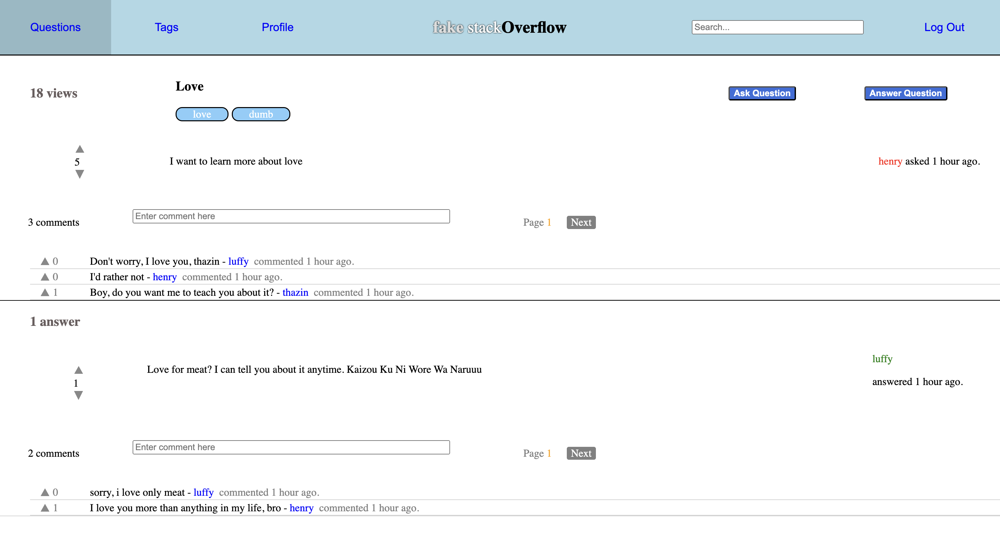
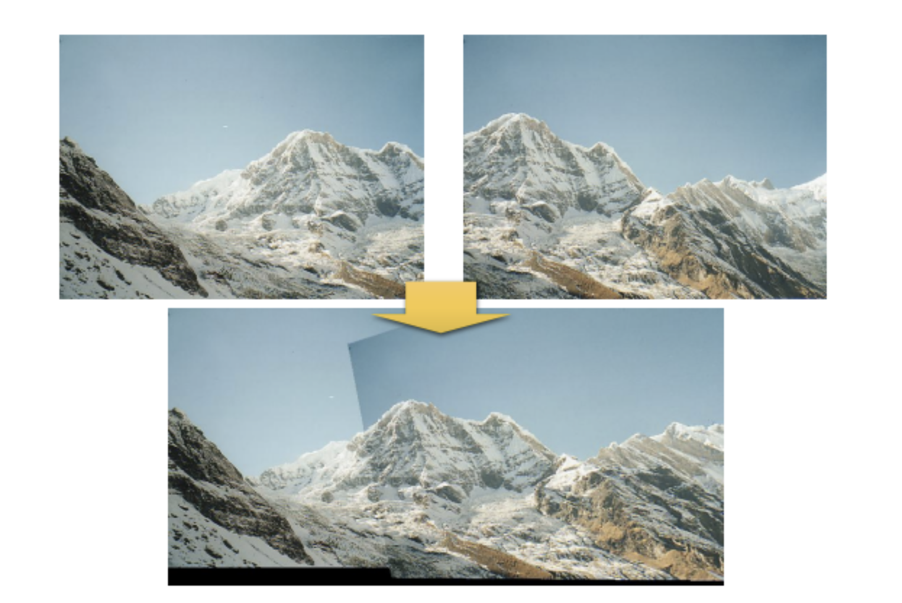
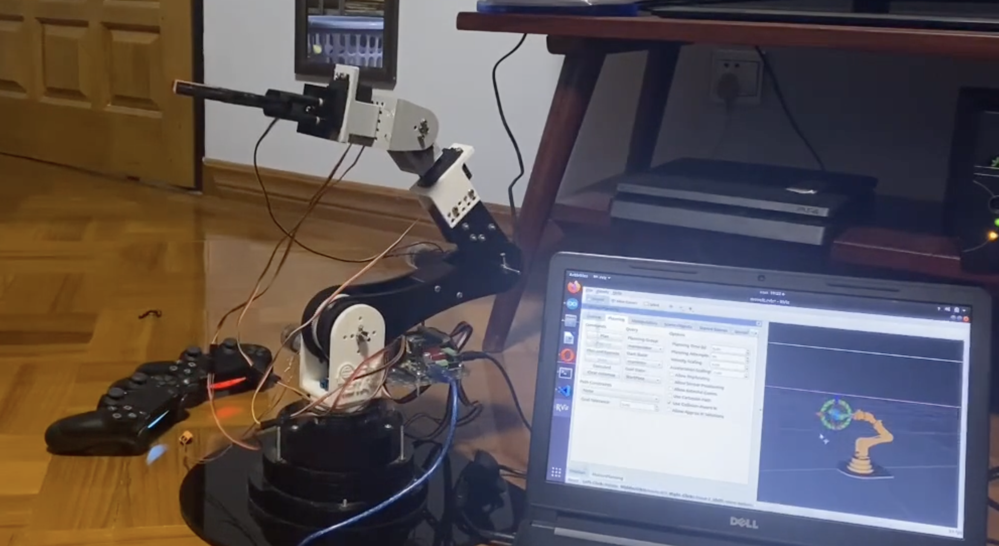
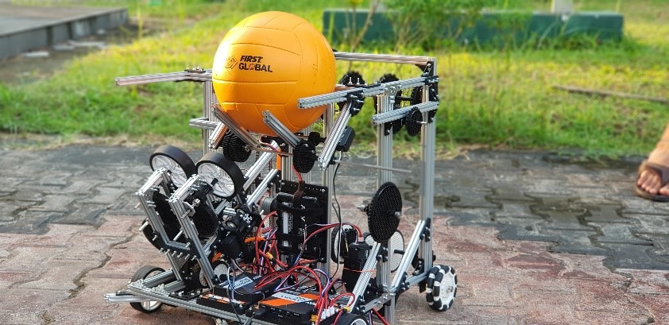

MERN
Full Stack
CI/CD

Developed a responsive AI-driven self-care assistant that provides personalized skincare recommendations, AI-powered skin analysis, and gamification features to enhance user engagement. Integrated LangChain, Llama, and FaceApp API for chatbot assistance and skin diagnostics. Built with the MERN stack (MongoDB, Express.js, React, Node.js) to implement leaderboards, AI Skin Lab, chat functionality, product recommendations, and streak tracking. Ensured robust testing with Vitest, CI/CD automation using GitHub Actions and GitHub Pages, and deployed on Render for seamless hosting. Designed an intuitive UI for a smooth, fully responsive user experience.
Python
EDA
Data Science

Conducted EDA and predictive-modeling of a 7-day sensor and sales dataset for Gala Groceries, and extracted insights for efficient stocking and management of supermarket systems
April, 2024
Python
EDA
Data Science
Performed data cleaning, interpolation and statistic tests (Wald, T, Z, Bayesian, Chi-Square, K-S, Permutation, Time Series Analysis) without using black box library codes and structured multiple linear regression using normal equation.
MERN
Full Stack

Developed a full-stack web application inspired by Stack Overflow, allowing users to ask questions, provide answers, and engage in discussions. Implemented user authentication, question upvoting/downvoting, and real-time updates using the MERN stack (MongoDB, Express.js, React, Node.js). Designed an intuitive UI and optimized backend performance for seamless interaction.
Python
Computer Vision
Artificial Intelligence

Implemented Harris Corner Detection, two-directional feature matching with Normalized Cross Correlation(NCC), Homography calculation, Backward bilinear image warping, and Random Sample Consensus (RANSAC) to filter without black box libraries.
Python
Cpp
Robotics

Designed and built a 6 Degrees Of Freedom (DOF) robotic arm with grabber arm mechanism
Implemented real-time simulation-based inverse kinematics with Robot Operating System (ROS) and rviz2,
gazebo, moveIt package, and Arduino.
Enhanced precision using Proportional-Integrative-Derivative control (PID).
Python
Java
Robotics

Represented Myanmar. Implemented the integration of odometry kinematics, flywheel mechanism, image processing, and sensor fusions. Attained Judges First Award, where the criteria are the mechanical, computational, and implementation design.
Python
Algorithm
Visualization

Using Pygame Library, engineered visualizer to aid students to understand the Insertion Sort, Selection Sort, Merge Sort and Bubble Sort by color coding each iteration without using the sorting libraries